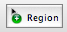

Bosque - Editing
This document describes the GUI based editing facilities of Bosque. The programmatic facilities are described in the help files of the respective classes, e.g. BosqueTimelineEditor, BosqueSession, BosqueFuncRegionStake, etc.
The Menu Window
When Bosque is launched, a few windows appear in SwingOSC. There is a "menu" window which allows you to show and hide all the other windows. Closing the windows via the titlebar close button is disabled.
Furthermore the menu window has a drop down menu labelled "Action" which contains utility functions:
Audio Rec. -- brings up a GUI for recording output from scsynth. The bus is already configured to record from Bosque's master bus.
OSC Mem Play -- brings up a GUI to playback OpenSoundControl data. In this window clicking on the ellipsis (...) in the top right corner lets you select an OSC file (created with the OSC recorder described in the next paragraph). The loop or infinity symbol button indicates whether the transport is slaved (button blue / active) or not (button grey / off) to the main bosque transport. The Offset field can be used to specify a relative time offset when playing back in sync to the main transport.
OSC Rec -- brings up a GUI to record OSC data received by sclang. File names are automatically created inside the folder specified in the top of the window (again clicking on the ellipsis (...) brings up a folder chooser dialog). The key text field specifies a filter for incoming OSC messages. Only messages beginning with the key are recorded. If "Ignore Bundle Times" is checked, messages are written into the file with a timetag corresponding to the arrival time in sclang. The loop or infinity symbol button indicates whether the transport is slaved (button blue / active) or not (button grey / off) to the main bosque transport. When slaved, a new file is automatically recorded each time the main transport playback starts.
Fullbody -- brings up a view of the EGM fullbody OSC data (3D skeleton broken up into three 2D views).
The Timeline Window
This is the main editing window for the bosque sessions. The timeline is shown with time on the horizontal axis and tracks on the vertical axis.
To begin editing a session, you will first need to insert some amount of time, by choosing the screenbar menu item Timeline -> Insert Span and entering a duration in seconds. The timeline axis on the top part of the window shows the currently visible span, corresponding to
~doc = Bosque.default.session;
~visiSpan = ~doc.timelineView.span; // the visible span in the timeline window
Note that Span objects in Bosque are always specified in sample frames (where the default sample rate is 44.1 kHz), whereas the GUI timeline axis shows time in (HH:)MM:SS(.millis).
To navigate in time, the following keyboard shortcuts are available:
Ctrl+Cursor Left/Right -- Zoom in/out
Cmd+Shift+Cursor Left -- Zoom completely out
BUG: sometimes the keyboard shortcuts don't work. In that case hide and re-open the window by clicking
twice on the "Timeline" button of the Menu window.
The visible portion can be moved with the scrollbar on the bottom of the window.
A red vertical line indicates the current timeline cursor position, corresponding to
~doc.timelineView.cursor.position;
... when the transport is not running, or ...
~doc.transport.currentFrame;
... when the transport is running.
The cursor position is used
- as the starting point for playback
- as the insertion point for the menu item Edit -> Paste
- as the cutting point when using the menu item Timeline -> Split Objects
- for dropping audio regions from the Collections window (see separate section)
The cursor position can be altered by clicking anywhere inside the timeline axis.
A blue shaded rectangle indicates the current timeline selection, corresponding to
~doc.timelineView.selection.span;
A blue shaded rectangle indicates the current timeline selection. It can be altered by performing a Shift+Click inside the timeline axis. Alt+Click in the timeline axis clears the selection span. Stake and track selections are described in other sections of this text.
The timeline selection is used
- for loop playback
- for the menu items Timeline -> Clear Span and Remove Span
- for inserting objects using the menu items Timeline -> Insert Env and Insert Func
- for changing the master volume envelope gain using Timeline -> Change Gain
Tracks
The objects in a session are not only organized by their location on a timeline, but also by being part of a track (see also: BosqueTrack). When Bosque is launched, only the special marker track exists, other tracks onto which region boxes can be placed must first be created from the Collections window, by selecting the "Tracks" tab and pressing the "+" button. The tracks are reflected programmatically in
~doc.tracks; // --> BosqueSessionCollection
A track has a name, an optional bus configuration (see BosqueBusConfig), an optional ControlSpec and Bus for k-rate envelopes. These properties are accessible in the "Track" tab of the Observer window.
Tracks are used to visually organize the regions, but also to associate audio and control busses with them.
Tracks can be selected and deselected. To select or deselect a track, Shift+Click on its name in the left side of the timeline window. Cmd+Click inverts the selection of all tracks. Alt+Click selects or deselects all tracks. Simply clicking on an unselected track will clear the selection and only select that track.
The track selection is used
- for the menu items Timeline -> Insert Env and Insert Func
- for dropping audio regions from the Collections window (see separate section)
The track selection is reflected programmatically in
~doc.selectedTracks; // --> BosqueSessionCollection
Stakes
The regions placed in the timeline on tracks are called stakes in Bosque (with the common superclass being BosqueRegionStake). The region list or region organization structure is called trail (see BosqueTrail). In the GUI you don't see the trail directly, but the stakes are rendered as rectangular graphical objects in the tracks of the timeline.
Two types of stakes can be generated ex nihilo: the functional object stakes (BosqueFuncRegionStake) and the envelope (breakpoint function) stakes (BosqueEnvRegionStake). To create them, make a timeline selection that covers the span of the stake to create, select a track on which the stake should be placed. Then choose Timeline -> Insert Env or Timeline -> Insert Func.
A third type of stakes are audio region stakes (BosqueAudioRegionStake). They are created by choosing an audio file from the "Audio Files" tab of the Collections window and choosing "Drop Region" from that tab's Action dropdown menu. Another way to create audio regions is to drop a region description string into the audio file drag sink and choosing Edit -> Paste (see the section "Audio File Drag-Sink" for details).
Stakes can be selected, deselected or moved with the "Move" timeline tool, their span's boundaries can be adjusted with the "Resize" timeline tool. Envelope regions can be edited with the "Env" timeline tool. See the "Mouse-Tools" section for details.
Markers
In fact, a forth type of stake is the marker stake (BosqueMarkerStake). The markers have their own trail though and also appear separately on their own marker track in the GUI. Markers can be used to structure the timeline but also be read programmatically. To create a marker in the GUI, double click on the marker axis. To delete one, Alt+Click on it. To rename it or edit its position textually, double click on one. To move a marker, press the button over it and drag it to a new position.
Master Volume Envelope
The bottom part of the timeline window contains a special envelope view that controls the master volume of the audio player. Double-click to insert a breakpoint, Alt+click to remove one.
BUG: the view currently doesn't zoom and scroll along with the rest of the timeline.
Audio File Drag-Sink
The drag sink widget in the top left corner of the window is meant to be used along with the Eisenkraut sound file editor (www.sciss.de/eisenkraut).
To use a part of a sound file which is currently opened in Eisenkraut, select that part and make a drag-n-drop, by pressing the mouse over the drag source widget (), and releasing the mouse over the Bosque drag sink widget. The name of the sound file appears in the drag sink. Now move the timeline cursor to the preferred insertion point and choose Edit -> Paste. Currently, the region is placed on the first track of the session, in a future version the currently selected track may be honored.
Mouse-Tools
The stakes can be edited using three different mouse tools: "Move", "Resize", and "Env". The currently selected tool is displayed right to the waveform zoom slider in the top part of the timeline window. To switch tools use the Tool menu or their keyboard equivalents (Cmd+1, Cmd+2, Cmd+3).
The "Move" tool is used to select or deselect stakes and to move them around. To select a stake click on it. To deselect it, Shift+Click on a selected stake. To extend the selection, Shift+Click on another unselected stake. To clear the selection, click anywhere outside the stakes. To move the selected stakes around, press the button over a selected stake and start dragging the mouse around. To constrain motion horizontally or vertically, press the Shift key before starting the drag.
The "Resize" tool is used to adjust the bounds of the selected stakes. You can also use it like the Move tool to select or deselect stakes. To adjust the left boundary of the stakes (span's start frame), press the mouse anywhere near the start inside a selected stake and start dragging. To adjust the right boundary of the stakes (span's stop frame), press the mouse anywhere near the stop inside a selected stake and start dragging.
The "Env" tool is used to edit the envelope of an envelope stake. To add a breakpoint, Double-Click at the desired position inside the stake. To remove a point, Alt+Click on it. To move a point, press the mouse over it and start dragging.
Waveform Zoom
The slider in the top part of the timeline window can be used to adjust the "contrast" (or vertical zoom) of the audio region waveform display. Moving the slider to the right will increase the vertical zoom of all audio region waveforms, moving it left will do the opposite.
Note that the waveforms are only displayed, if BosqueAudioFile.overviews is true.
Loading and Saving Sessions
The sessions can be stored and recalled in simple text files. This is acomplished by calling asCompileString on the session and interpret on the file contents. In the GUI, this corresponds to choosing File -> Save and File -> Open. If a session was not saved before, choosing File -> Save will prompt you for a folder on the harddisk and a name. Although not necessary, it is recommended to use the file extension ".txt".
After saving a session, the filename will appear in the timeline window's title bar. A bullet character • in front of the window title indicates that the session contains unsaved changes.
Important: If a SuperCollider code file in RTF format having a related filename exists, it is automatically loaded and executed when you load a session. This way you can group all the code fragments for functional object regions in one file that is associated with your session. The filename for the code fragments should be the same as the session file (and be placed in the same folder), but ending with "Func.rtf", e.g.
Session file: MySession.txt
Code fragment file: MySessionFunc.rtf
To clear the session and start over, choose File -> New.
BUG: there is some problems with some old settings surviving File -> New, so at the moment it is recommended to kill and restart
Bosque to start a new empty session.
The Transport Window
This window gives you controls to start and stop realtime playback (see also BosqueTransport). The current time is shown in the right side of the window.
The window also contains a slider for adjusting the overall (master) volume of the audio player. Gain is shown in decibels. Note that their is always a limiter in the master bus, so it's safe to boost levels.
The "recycling" button is switching on and off loop playback. When switching loop playback on, the loop span is taken from the current timeline selection. The "star" button was used as a trigger for the Forest project and should be ignored.
The Observer Window
The observer window is something that is called "Inspector" in other applications: It shows you the parameters of currently selected objects. These can be stakes (called "Regions" here) and tracks:
Regions

The data in this tab reflects the currently selected stake(s). If the text fields are greyed out, this indicates that no stakes are selected. Note that if more than one stake is selected, the data merely reflects the stake that was first selected! However, when you edit any of the parameters and confirm by pressing the return key, the changes are applied to all selected stakes. This way you can easily change the colour of a range of stakes at once, for example.
Each stake has a name that is shown in the title bar of the graphical rectangle drawn in the timeline window, and a colour for this rectangle's title bar. The current colour is shown in the quadratic field on the left side, the rainbow bar on the right side serves as a colour chooser widget.
The fade-in and fade-out times are specified in milliseconds. The gain boost or attenuation is specified in decibels. Fades and gain have a defined behaviour for audio stakes, their meaning for functional object stakes depends on your functional code, and for envelope stakes they are not used.
The last three fields are only used by functional object stakes: The "F Evt Var" is the "functional environment variable", a text fragment that when evaluated by the SuperCollider interpreter should yield a reference to an Event or AnyMap object (see BosqueFuncRegionStake for details), so usually you will put an environment lookup string here (like ~myEvent). "F Modtrack" specifies the modulated track. It can be modified by dragging a BosqueTrack object to it, e.g. by going to the "Tracks" tab of the Collections window, selecting a track and making a drag (Ctrl+Press+Move mouse). The "F Position" selection determines whether the synths of the functional object should act on a pre- or post-panorama level.
Track

The name of the selected track is currently not editable (you can do this programmatically if desired). The next three parameters are modified by dropping appropriate objects on the drag sink widgets: The "Bus Config" should be a BosqueBusConfig object, defining the track's audio bus. Usually, you will go to the "Busses" tab of the Collections window, select a bus and make a drag (Ctrl+Press+Move mouse). For the "Ctrl Spec" you should have a ControlSpec object at hand. The easiest way to create one is to type it's spec in a SuperCollider Document window, select the text and start a drag – the text selection will automatically be evaluated by the Interpreter, and the resulting (ControlSpec) object can be dropped on the drag sink, e.g.
ControlSpec( 30, 20000, \exp, 0.0, 1000, " Hz" ); // <-- select that and drag it
The same is true for the "Ctrl Bus" parameter: The object here should be a monophonic k-rate Bus, e.g.
Bus( \control, 100, 1, Bosque.default.scsynth ); // <-- select that and drag it
Alternatively (and much more simple) you can drop an Integer object (since the control bus needs to be monophonic anyways):
101 // <-- select that and drag it
The "Mute" switch can be used to tell the audio player not to playback stakes placed on that track.
The Collections Window
There are three groups of objects associated with a session that are administrated with this window: Audio Files - the sound files used in the session (as a whole or as sub-regions), Busses - the audio bus configurations used to route inputs to outputs, and Tracks.
Audio Files
A list of audio files used in the session. Note that this is not a list of audio file regions, e.g. if you have three regions referring to the same audio file, you will still just have one element (the parent file) in this list. You can add a file by pressing the "+" button in the top right corner. A file chooser will prompt you for the file on the harddisk. Do remove a file from the list, select it and hit the "-" button. If there are any regions in the session referring to the file, a dialog will ask you to confirm the deletion (the associated stakes will also be removed if you confirm). Files which are currently not used in the session are removed without dialog confirmation.
To place an audio file on the timeline, i.e. to create a BosqueAudioRegionStake, select the audio file in the list and choose "Drop Region" from the Action dropdown menu. The file is placed as a region spanning the whole duration of the file on the currently selected track (or on the first selected track if there is more than one track selected), starting at the current timeline cursor position.
The "File replace File" action will replace a sound file with different one that you choose from a file dialog. The new file is added to the list, and all regions referring to the (old) selected file will be modified to use the new file instead. This is useful if you discover that you want to make a global modification to a sound file, e.g. apply a global equalizer or rearrange the channels.
In contrast, the "Regions replace File" will replace the audio file of all selected audio stakes with the currently selected file. This is useful if you wish to make a local colourization of a sound, e.g. replace it's occurence in one place with a version which was dynamically changed (compressed, expanded, etc.) or modulated (pitched, equalized, reversed, ring-modulated, etc.).
The last item of the "Action" dropdown menu, called "Consolidate", will create a new sound file based on the selected soundfile, which only contains the chunks of audio actually used in the session. This new file will replace the old one in the list and all audio stakes using that file will be redirected to the consolidated file. This way you can save harddisk space before backing up your session at the end of a production, because in many cases you only use a small percentage of the sound contained in one file.
Busses
The busses should actually be called "Routing Configuration" as they essentially point to an audio-rate Bus object, but more importantly specify a matrix of connections. For example, you might do an octophonic piece, so the master bus has eight channels, but not all soundfiles used have eight channels, there may be some monophonic or stereophonic files as well. To properly route them to the master busses, you may use a mono-to-octo or a stereo-to-octo configuration. Note that the bus configurations are static matrices, e.g. you cannot use them to create a panorama automation or the like.
To create a new configuration, press the "+" button. A dialog requests you to enter a name and the number of input and output channels for the new configuration. The matrix will be initially clear, so the next step is to make the proper connections by clicking in the cells of the matrix GUI object. A dark red colour indicates a "0 decibel" connection. You may use the slider on the left side though to attenuate a specific node. For example, in a stereo setup, you may choose to route monophonic files equally to the left and right channel but with a 3 dB attenuation, or you may have a configuration that includes a subwoofer and the level of the woofer is lower than full gain.
Note that any modification of the matrix needs to be confirmed by pressing the "Apply" button.
To use the configuration for a particular track, select the track in the timeline window, open the Observer window and view the "Track" tab, then select the bus configuration and perform a drag-and-drop: Ctrl+Press over the Busses list gadget, move the mouse over to the Observer window and release it over the drag-sink gadget labelled "Bus Config".
To delete a configuration, select it in the list and press the "-" button. If the config is used by one or several tracks, a dialog will ask you to confirm the deletion.
Tracks

Here you can create, delete and select tracks. To create a track, press the "+" button. The new track is appended to the end of the list, the name is automatically created. To delete one, select it and press the "-" button. The selection is automatically reflected in the timeline window (the selected tracks are shown in blue background colour).
This window can also be used to drag-and-drop a track to a functional object stake's modification-track parameter (in the "Regions" tab of the Observer window). A drag is performed by holding down the Control key and pressing the mouse of the track list, then dragging the mouse and releasing it over a drag sink gadget.
__________
this file last modified: 13-sep-08